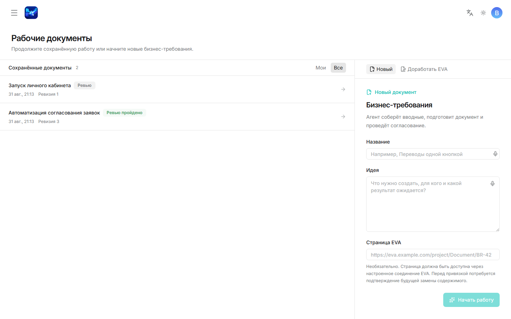
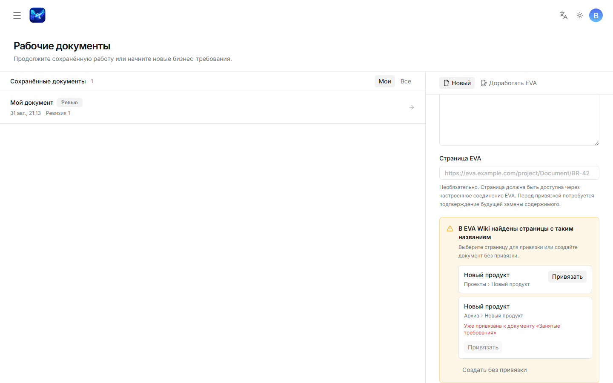
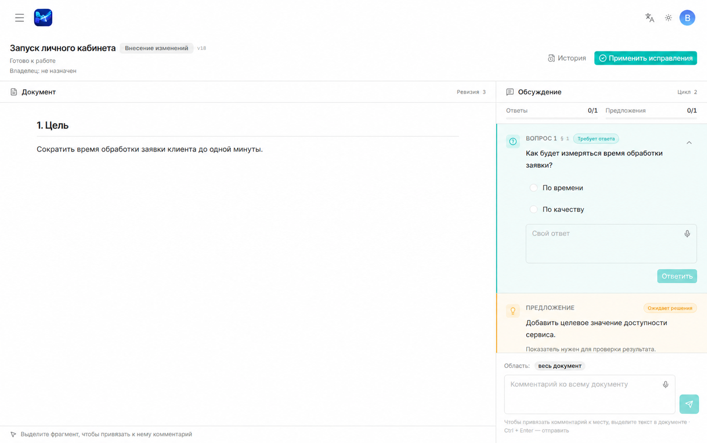
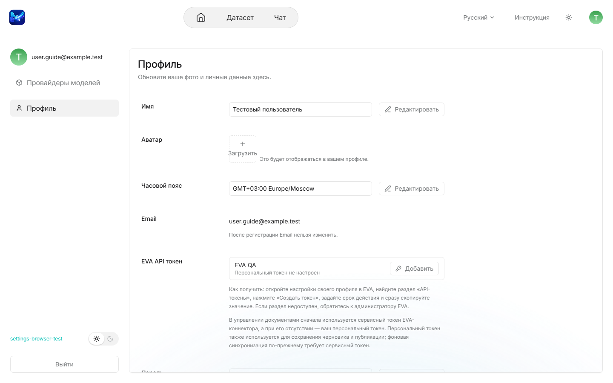
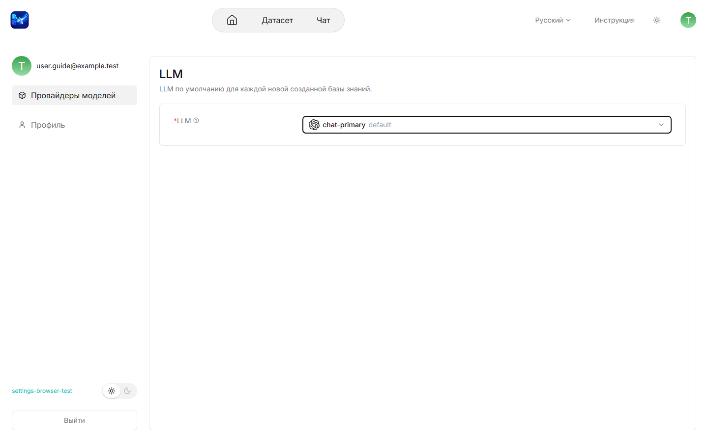

Работа с документами бизнес-требований и доступные настройки учётной записи
Проверено: 6 сентября 2026
Эта инструкция описывает раздел Документы, экран Профиль, выбор LLM, переключение темы и выход из системы. Названия элементов приведены так, как они отображаются в русском интерфейсе.
Основной объект работы — документ бизнес-требований. Заголовок страницы Рабочие документы и заголовок списка Сохранённые документы обозначают области интерфейса, а не отдельные типы документов.

Если результат запроса неясен из-за ошибки сети, сначала обновите список Сохранённые документы. Не создавайте второй документ, пока не убедитесь, что первый отсутствует.
Если появилось сообщение В EVA Wiki найдены страницы с таким названием:

В области Сохранённые документы доступны два фильтра:
В карточке документа отображаются владелец, номер ревизии, время изменения, состояние документа и текущая операция.
| Что отображается | Возможные значения |
|---|---|
| Состояние документа | Сбор вводных, Внесение изменений, Правки внесены, В архиве |
| Текущая операция | Готово к работе, Анализ вводных, Анализ замечаний, Создание черновика, Применение изменений, Подготовка файла, Операция завершилась с ошибкой |
Документ в состоянии В архиве доступен только для чтения.
Во время Сбора вводных система анализирует описание идеи и формирует уточняющие вопросы.
Статусы вопроса Требует ответа, Ответ зафиксирован и Закрыт описывают его состояние. Отдельного пользовательского действия «закрыть вопрос» нет.
Не закрывайте страницу во время операций Анализ вводных и Создание черновика, если хотите наблюдать за прогрессом. При этом повторное открытие документа не отменяет выполняемую операцию.
Рабочая область внесения изменений состоит из панели Документ и панели Обсуждение. В обсуждении находятся вопросы, ответы, предложения и комментарии текущего цикла.

Если отображается сообщение Фрагмент относится к предыдущей ревизии, сначала перечитайте актуальный текст и проверьте контекст замечания.
Карточка Предложение содержит обоснование и действия Принять и Отклонить. Принятое предложение ещё не меняет документ.
Чтобы изменить уже согласованный документ, нажмите Начать вносить изменения. Это открывает новый цикл внесения изменений.
Откройте История, чтобы увидеть Ревизию N, время изменения, автора, инициатора и исполнителя. Перед повторным действием после конфликта версии обновите страницу и проверьте последнюю ревизию.
В согласованном документе доступны действия:
Сначала запускается Подготовка файла. Скачивайте результат после завершения операции. Формат DOCX в текущем интерфейсе не предлагается.
Архивация обратимо ограничивает редактирование. Безвозвратное удаление — другое действие, доступное только расширенным ролям.
Для операций записи нужен персональный EVA-токен. Настройка адреса подключения, пространства и сервисного токена выполняется администратором и в эту инструкцию не входит.
После нажатия Подтвердить изменения отображается состояние Согласовано. После нажатия Сохранить как черновик в EVA оно сменяется на Черновик сохранён в EVA, а после публикации — на Опубликовано.
Сообщение Только ссылка — доступный коннектор не найден означает, что ссылка на страницу сохранена, но операции чтения и публикации сейчас недоступны.
Откройте аватар в правой части верхней панели, затем выберите Профиль.

| Поле | Доступное действие |
|---|---|
| Имя | Изменить отображаемое имя |
| Аватар | Добавить или заменить изображение |
| Часовой пояс | Выбрать часовой пояс |
| Просмотреть; изменение после регистрации недоступно | |
| Пароль | Указать текущий и новый пароль |
| EVA API токен | Добавить, заменить или удалить персональный токен |
Значение EVA-токена после сохранения не показывается. Никогда не помещайте пароль или токен в комментарий, снимок экрана или обращение в поддержку.
Экран выбора модели расположен отдельно от Профиля.

Выбранная LLM используется по умолчанию при анализе и генерации в разделе Документы. Добавление провайдера, API-ключи и модели других типов доступны только администратору.
Эти действия находятся в оболочке настроек и не являются полями профиля.
Проверьте по порядку:
При обращении к администратору передайте время ошибки, название документа, видимое состояние, выполнявшееся действие и текст ошибки. Не передавайте пароль, токен или закрытое содержание документа.
| Термин | Значение |
|---|---|
| Документ бизнес-требований | Основной объект работы в разделе Документы |
| Ревизия | Зафиксированная версия содержания документа |
| Внесение изменений | Этап уточнения документа с вопросами, комментариями и предложениями |
| Обсуждение | Панель обратной связи текущего цикла внесения изменений |
| Привязка к EVA | Связь документа со страницей EVA без немедленной публикации |
| Публикация в EVA | Отдельное подтверждаемое изменение видимой страницы EVA |
| LLM | Выбранная по умолчанию чат-модель |